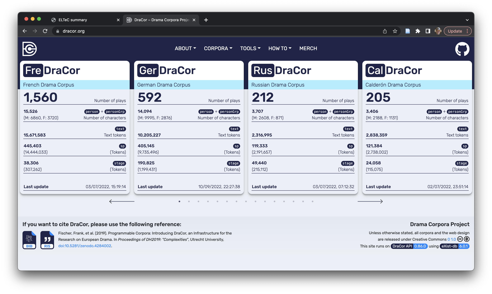
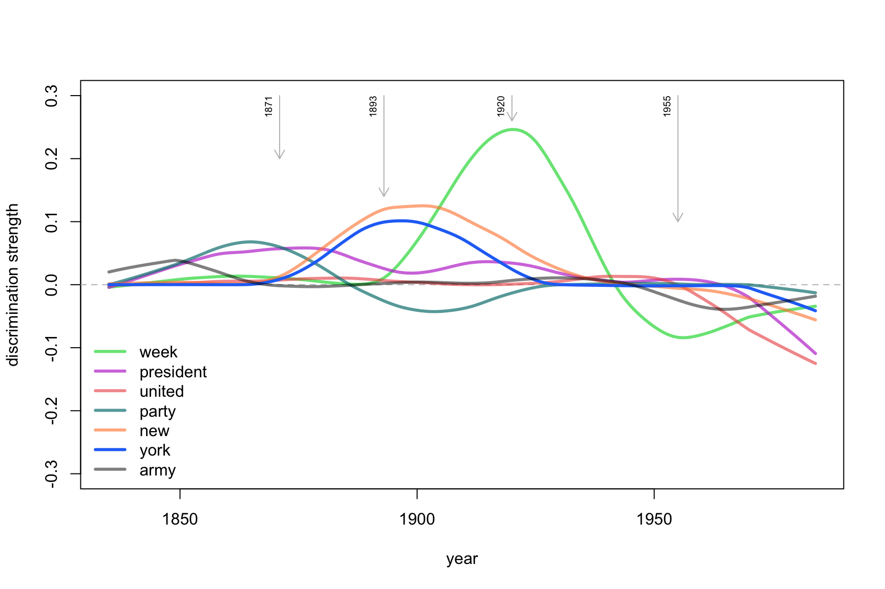

the to of and her i a in was she that it not you
4330 4161 3609 3584 2227 2065 1955 1880 1847 1710 1577 1532 1426 1357 Computational stylistics
From Authorship Attribution to Assessing Language Change
Maciej Eder
Polish Academy of Sciences | University of Tartu
2025-04-22
Overview
- Stylistic fingerprint
- Authorship attribution at a glance
- Fictional characters’ voices
- Stylometry as a tool to assess language change
Fingerprint
The notion of stylistic fingerprint
- An area between language constrains and a freedom of choice
- Undiscoverable with the naked eye
- Beyond authorial control
- Resistant to imitation, plagiarism and parody
- Popular solution: frequencies of the Most Frequent Words
Words are not distributed evenly
It is a truth universally acknowledged, that a single man in possession of a good fortune, must be in want of a wife. However little known the feelings or views of such a man may be on his first entering a neighbourhood, this truth is so well fixed in the minds of the surrounding families, that he is considered the rightful property of some one or other of their daughters.
“My dear Mr. Bennet,” said his lady to him one day, “have you heard that Netherfield Park is let at last?” Mr. Bennet replied that he had not.
“But it is,” returned she; “for Mrs. Long has just been here, and she told me all about it.” Mr. Bennet made no answer.
“Do you not want to know who has taken it?” cried his wife impatiently. “You want to tell me, and I have no objection to hearing it.” This was invitation enough.
Function words = frequent words
It is a truth universally acknowledged, that a single man in possession of a good fortune, must be in want of a wife. However little known the feelings or views of such a man may be on his first entering a neighbourhood, this truth is so well fixed in the minds of the surrounding families, that he is considered the rightful property of some one or other of their daughters.
“My dear Mr. Bennet,” said his lady to him one day, “have you heard that Netherfield Park is let at last?” Mr. Bennet replied that he had not.
“But it is,” returned she; “for Mrs. Long has just been here, and she told me all about it.” Mr. Bennet made no answer.
“Do you not want to know who has taken it?” cried his wife impatiently. “You want to tell me, and I have no objection to hearing it.” This was invitation enough.
Word frequencies as language features
raw occurrences of words:
relative frequencies:
the to of and her i a in was she that it not you
3.49 3.36 2.91 2.89 1.80 1.67 1.58 1.52 1.49 1.38 1.27 1.24 1.15 1.09 Rank/frequency dependence
Authorship attribution
Non-traditional authorship attribution
Given:
- a text of uncertain or anonymous authorship, and
- a comparison corpus of texts by known authors,
is it possible to find the ‘nearest neighbor’ among the available candidates?
Example: Prometheus Bound
- Aeschylus known for his 7 tragedies
- Prometheus Bound somewhat odd, and thus disputed
- Traditional arguments against Aeschylus’ authorship
- Zeus depicted as a cruel tyrant
- slightly different versification patterns
- the third actor needed in one of the scenes
Stylometry: where it (usually) begins
καὶ δ γὰρ δὲ ὦ ὡς τὸν ἀλλ τὸ ἐν
Aesch_Ag 1.734 2.784 0.965 0.989 0.122 0.647 0.550 0.232 0.843 0.867
Aesch_Eum 2.718 2.322 1.038 1.114 0.264 0.510 0.434 0.378 0.887 0.925
Aesch_Lib 2.128 2.477 1.028 1.156 0.550 0.587 0.404 0.422 0.514 0.991
Aesch_Pers 2.062 2.331 1.040 1.291 0.405 0.713 0.231 0.347 0.424 0.424
Aesch_Prom 1.857 1.536 1.097 1.232 0.236 0.557 0.557 0.422 0.591 0.405
Aesch_Septem 2.131 2.893 0.841 1.114 0.391 0.430 0.528 0.293 0.215 0.782
Aesch_Supp 2.206 2.712 0.648 1.012 0.223 0.607 0.304 0.324 0.688 0.587
Aristoph_Ach 2.151 1.305 0.694 0.680 1.166 0.597 1.069 1.096 0.944 0.486
Aristoph_Av 2.521 1.163 0.874 0.874 0.772 0.484 1.154 0.595 0.726 0.447
Aristoph_Ec 2.551 1.250 1.614 0.898 0.716 0.534 1.172 1.067 1.106 0.482
Aristoph_Eq 3.628 1.153 0.941 0.616 1.097 0.549 1.209 0.795 0.605 0.795
Aristoph_Nu 2.784 0.880 0.859 0.497 0.921 0.569 1.563 1.025 0.714 0.383
Aristoph_Pax 2.884 0.982 1.156 0.584 1.542 0.783 0.932 0.957 0.684 0.323
Aristoph_Pl 2.779 1.377 1.672 0.898 0.689 0.787 1.353 0.910 0.652 0.320
Aristoph_Ra 3.133 1.055 1.088 0.870 0.696 0.435 1.218 0.859 0.892 0.446
Aristoph_Th 2.420 1.031 1.031 0.839 1.114 0.591 0.811 0.660 0.990 0.399
Aristoph_V 2.605 0.814 1.058 0.722 0.845 0.743 1.170 0.997 0.753 0.468
Eur_Ba 1.366 2.194 0.814 1.327 0.617 0.828 0.683 0.433 0.657 0.998
Eur_El 1.381 2.294 1.108 1.329 0.782 0.626 0.313 0.469 0.169 0.834Table of computed distances
Aesch_Ag Aesch_Eum Aesch_Lib Aesch_Pers Aesch_Prom
Aesch_Ag 0.0000 0.8701 0.8453 0.9059 0.9737
Aesch_Eum 0.8701 0.0000 0.9311 0.9995 1.0242
Aesch_Lib 0.8453 0.9311 0.0000 0.9961 1.0411
Aesch_Pers 0.9059 0.9995 0.9961 0.0000 1.0034
Aesch_Prom 0.9737 1.0242 1.0411 1.0034 0.0000
Aesch_Septem 0.9166 0.9639 0.9832 0.9448 1.0334
Aesch_Supp 0.8546 0.9083 0.9764 0.9363 0.9707
Aristoph_Ach 1.0465 1.1672 1.1558 1.1025 1.0434
Aristoph_Av 1.1260 1.1974 1.2125 1.1292 1.0873
Aristoph_Ec 1.2108 1.2909 1.2650 1.2537 1.1270
Aristoph_Eq 1.1116 1.2165 1.1751 1.1301 1.0500
Aristoph_Nu 1.1055 1.2140 1.2050 1.1748 1.0558
Aristoph_Pax 1.1199 1.2549 1.2173 1.1512 1.0876
Aristoph_Pl 1.1999 1.2931 1.2948 1.2655 1.1674
Aristoph_Ra 1.0861 1.1780 1.1563 1.1452 1.0277
Aristoph_Th 1.1064 1.1974 1.1747 1.1770 1.1055
Aristoph_V 1.1080 1.2059 1.1916 1.1622 1.0544
Eur_Ba 0.9822 1.0982 1.0513 1.0231 1.0175
Eur_El 1.0146 1.1006 0.9912 1.1021 1.0855Hierarchical cluster analysis
Multidimensional scaling
Bootstrap consensus tree
Introducing controlled noise
Supervised machine-learning approach
Testing a given candidate against imposters...
Ael.Ar
Ael
Aesch
Aeschin
Aristoph
Eur
Isocr
Soph Ael.Ar Ael Aesch Aeschin Aristoph Eur Isocr Soph
0.00 0.00 0.11 0.00 0.00 0.96 0.00 0.18 Not only attribution…
Beyond authorship attribution
- Authorship profiling
- Forensic linguistics
- Register analysis
- Genre recognition
- Gender differences
- Translatorial signal
- Early vs. mature style
- Style evolution
- Detecting dementia
- …
Basic concepts
- “Computation into criticism” (John Burrows)
- “Distant reading” (Franco Moretti)
- “Macroanalysis” (Matthew Jockers)
- but also: Underwood, van Dalen-Oskam, Piper, …
- Big Data
- Probability
Rolling stylometry
Roman de la Rose
- 13th-century French allegorical poem…
- … of mixed authorship:
- Guillaume de Lorris (ca. 1230)
- Jean de Meun (ca. 1275)
- The takeover point known (after the line 4,058).
Roman de la Rose

Queen Sophia’s Bible
- 15th-century Polish translation of the Bible
- Two volumes:
- 2nd disintegrated early, before 17th cent.
- 1st lost (destroyed?) during WWII
- Fortunately, a 1930 facsimile exists
Queen Sophia’s Bible

Queen Sophia’s Bible
- Translated from Czech
- Hebrew → Latin → Czech → Polish
- Five scribal hands recognizable
- Probably more than one translator involved
- Multi-level collaborative work
Queen Sophia’s Bible
Ficional characters’ voices
Fictional characters: why bother?
- Computation into criticism (John Burrows)
- researched Jane Austen’s characters
- Can a good author differentiate voices?
- Are there any overall trends?
- Do distinctive fictional voices mimic some general sociolinguistic phenomena?
A beginning of a good friendship
- Artjoms Šeļa
- Ben Nagy
- Joanna Byszuk
- Laura Hernández-Lorenzo
- Botond Szemes
- Maciej Eder
Šeļa, A., Nagy, B., Byszuk, J., Hernández-Lorenzo, L., Szemes, B. and Eder, M. (2024). From stage to page: language independent bootstrap measures of distinctiveness in fictional speech. https://arxiv.org/abs/2301.05659
Assumptions
- Authorship attribution methods to distinguish characters
- Telling apart particular characters should be doable in plays
- Corpus used: DraCor
- Shakespeare (37 plays)
- Russian drama (212 plays)
- French drama (1560 plays)
- German drama (592 plays)
DraCor
Strong idiolects (women)

Strong idiolect (men)

Weak idiolect (men)

Preliminary results
- Female characters more distinguishable than males
- Secondary characters more distinguishable than protagonists
Shakespeare and Russian plays
French plays, German plays

Further observations
- Female characters distinguishable…
- … despite the language and epoch
- Because the authors were almost exclusively male?
Most distinctive words
| fem. | masc. | fem. | masc. | fem. | masc. |
|---|---|---|---|---|---|
| FR | DE | EN | |||
| vous | diable | ach | der | husband | the |
| époux | la | o | die | you | of |
| mère | ami | du | teufel | alas | this |
| amant | les | vater | und | love | sir |
| mari | parbleu | mutter | ein | husbands | and |
| tante | maître | er | des | me | we |
| hélas | morbleu | mich | in | romeo | king |
| coeur | des | liebe | den | lysander | our |
| rivale | amis | mama | kerl | willow | their |
| ne | morgué | papa | kaiser | pisanio | duke |
| … | … | … | … | … | … |
pronouns vs. articles
family relations vs. public sphere
Language change?
Aim of the study
- Introducing a method to trace changes in language
- No a priori assumptions as to the change-makers
- Identifying the impactful words over time
- Application on the Corpus of Historical American English (COHA)
Langauge change
- There’s no clear definition of language change
- A more feasible approach: tracing changes in language
- Any two texts compared exhibit differences (e.g. in word frequencies), the same applies to any two samples of a language
- A provisional definition: a language change is an accumulative effect of significant changes in a language
The dynamics of change
The dynamics of language change
- Purely linear trends – not very probable
- Rather, epochs of substantial stylistic drift follow periods of stagnation
- The goal: observing the accelleration of language change
What is responsible for a change?
- A relatively small number of words that reflect changes in societies?
- (e.g. horse > automobile > car)
- A aggregation of numerous features of individually weak discrimination power?
- (e.g. the signal of authorship)
Data and methods
- Corpus of American Historical English (COHA)
- ca. 400 million words
- different genres (fic, mag, news, nf)
- covering the years 1810-2009
- A supervised classification
- Nearest Shrunken Centroids classifier
- 1,000 most frequent words
Procedure
Procedure
Procedure
Procedure
Procedure
Procedure
Procedure
Procedure
Accuracy
Why does it periodically accelerate?
- A naive assumption that the change can be linked to particular events in history and/or culture
- However, the impact of major historical breakthroughs on language cannot be ruled out
Accuracy
Who’s responsible for the change?
Distinctive features
Distinctive features: top words
So, which words are they?
[1] "the" "and" "week" "that" "'s" "last"
[7] "is" "be" "of" "it" "we" "i"
[13] "to" "was" "mr." "our" "my" "been"
[19] "not" "u.s." "you" "new" "upon" "there"
[25] "has" "says" "war" "york" "this" "n't"
[31] "will" "s" "which" "for" "had" "very"
[37] "have" "said" "are" "in" "city" "made"
[43] "me" "a" "president" "her" "us" "she"
[49] "his" "by" "united" "or" "at" "but"
[55] "q!" "party" "committee" "your" "so" "as"
[61] "street" "today" "men" "would" "with" "about"
[67] "heart" "do" "any" "'d" "out" "all"
[73] "if" "great" "army" "up" Words that matter
Words that matter
Words that matter
Words that matter
So, which words made history?
Function words
Words cannot simply “disappear”
Personal pronouns (“social” words)

Conclusions
- The language change seems to be a fluctuation of rapid and slow changes.
- Numerous features responsible for the change, rather than few strong predictors.
- unexpectedly many pronouns among the predictors
- increasing power of “social” function words (personal pronouns)
- Grand question: do we observe a language change, or a change in style? (e.g. a general taste of an epoch)
Thank you!
- maciej.eder@ut.ee
- @MaciejEder
- https://github.com/computationalstylistics